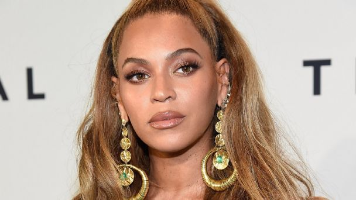
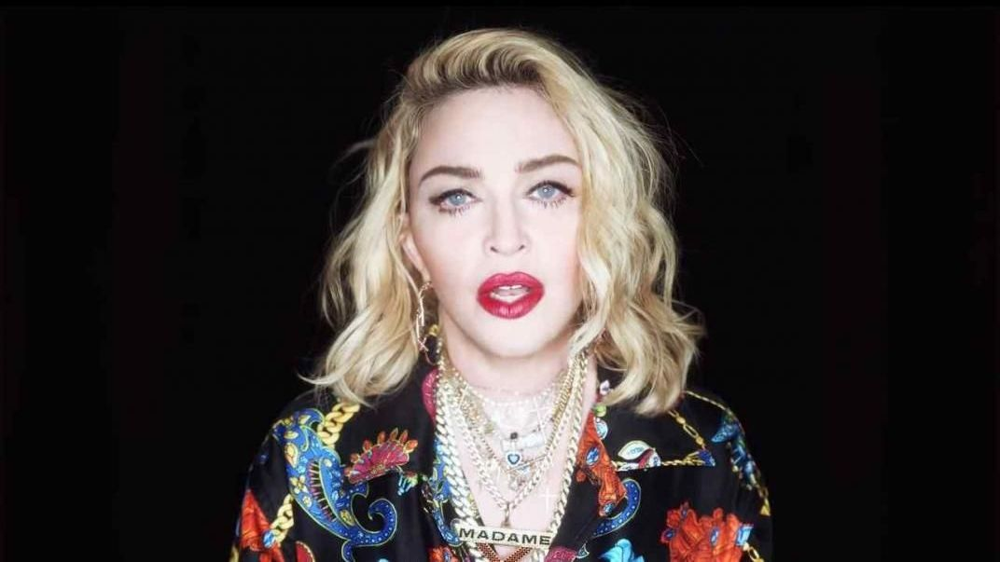

Robyn Rihanna Fenty, conocida simplemente como Rihanna, es una cantante, empresaria, diseñadora de moda, actriz, diplomática, escritora y filántropa barbadense. Es conocida por fusionar géneros caribeños con la música pop y por reinventar su imagen a través de los años.

Beyoncé Giselle Knowles-Carter, conocida simplemente como Beyoncé, es una cantante, compositora, bailarina, actriz, modelo, diseñadora de moda y empresaria estadounidense. Nacida el 4 de septiembre de 1981 (edad 38 años)

Madonna Louise Veronica Ciccone, conocida simplemente como Madonna, es una cantante, compositora, actriz, empresaria e ícono LGBT+, feminista, sexual, comercial y de la moda estadounidense. Pasó sus primeros años en Bay City y en 1977 se mudó a la ciudad de Nueva York para realizar una carrera de danza contemporánea.
Pensilvania, Estados Unidos |nacionalidad = Estadounidense |religión = Cristiana |ocupación = Cantante Compositora Productora Actriz Filántropa |instrumento = banjo guitarra piano voz |tiempo = 2004-presente |género = pop country pop rock country pop dance pop electropop synth pop bubblegum pop
Katheryn Elizabeth Hudson, más conocida por su nombre artístico Katy Perry, es una cantante, compositora, actriz, empresaria y modelo estadounidense, jueza del programa de talentos American Idol, que saltó a la fama en 2008 con «I Kissed a Girl» y «Hot n Cold» de su álbum debut One of the Boys.
Miley Ray Cyrus es una cantante y actriz estadounidense. Asimismo se dedica a causas humanitarias y al activismo en favor de los derechos del colectivo LGBT.Nace el 23 de noviembre de 1992 (edad 27 años)
(Londres, Inglaterra, 5 de mayo de 1988), conocida simplemente como Adele, es una cantante, compositora y multinstrumentista británica. Desde muy joven mostró su interés por la música y en 2006 egresó de la BRIT School de Artes Escénicas y Tecnología, año en el que firmó un contrato con XL Recordings, tras ser descubierta por unos demos que un amigo publicó en MySpace. En los Premios Brit de 2007 recibió el galardón elección de los críticos y también ganó la encuesta Sound of 2008 realizada por la BBC. En 2008, Adele lanzó su álbum de estudio debut, que se situó en la posición 1 de la lista de álbumes británica y ha sido certificado doble platino en Estados Unidos.